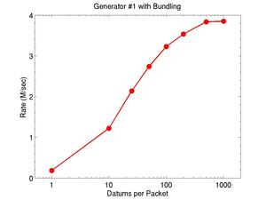
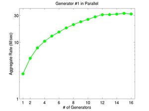

The current version of FireHose has three stream generators:
Source code for these is in the tarball directory "generators". Each sub-directory has code for one generator. Instructions for how to build and run the generators is given in the Running the benchmarks section.
Timing results listed below for datum generation rates were run on a desktop Dell Linux box with dual hex-core 3.47 GHz Intel Xeon (X5690) CPUs.
Each generator writes a stream of datums to one or more specified UDP ports on one or more specified hosts. The host/port pairs are specified as arguments to the generator. If multiple arguments are specified, the same stream of datums is written to multiple hosts/ports. Hosts can be specified in numeric IPV4 or IPV6 format, or as alphabetic hostnames. A port ID is optional and is appended to the host with a "@" separator, as in the following examples. If not specified, a default port ID of 55555 is used. These are example host/port arguments:
| 127.0.0.1 | localhost (this box) |
| 127.0.0.1@55555 | localhost + port ID |
| 134.251.2.121 | another box |
| 134.251.2.121@5678 | another box and port ID |
| fe80::a213:1234:1234:1234 | IPV6 host |
| fe80::a213:1234:1234:1234@12345 | IPV6 host and port ID |
| otherbox.mynet | another box |
| otherbox.mynet@5432 | another box and port ID |
All the generators produce a stream of "packets" in ASCII text format. Each packet contain one or more "datums" bundled together to increase the effective stream generation rate. The format of a packet with N datums is as follows; each line is terminated by a newline:
packet ID datum1 datum2 ... datumN
The ID (following the word "packet") is an integer, which can be stored as a 64-bit unsigned value. When a single generator is running, it is a number from 0 to N-1, where N = the number of packets. Packet IDs are altered when multiple generators are running in parallel, as discussed below. Analytics which read the packets typically ignore the packet ID, but it can be monitored if desired when developing or debugging an analytic. Each datum is a string of text, followed by a newline. The format of a datum is generator-specific, as discussed below.
In addition to the host/port argument(s), each generator takes optional command-line switches, each of which has a default setting. The following switches are common to all generators. Generator-specific switches are discussed below.
These command-line switches affect packet generation:
The total # of datums generated is Npacket*Nbundle. The default rate of 0 means packets are written as fast as the generator can create them. For finite rates, a timer is called after every packet is written and the generator delays sending the next packet by sleeping for an appropriate time.
Multiple copies of a generator can be launched simultaneously, so that a different stream is produced by each. When this is done, the following two switches should be used:
All the generators launched should specify the same value of Nprocs. Each should use a different value of Iproc from 0 to Nprocs-1. The generators use these values to change the random # seeds used internally for datum generation, as explained below. They also use them to encode a unique ID for each packet across all the generators. For example, if 3 generators are launched, and each is generating 5 packets (-n switch), then generator #1 will generate packet IDs 0,3,6,9,12, generator #2 will generate IDs 1,4,7,10,13, and generator #3 will generate IDs 2,5,8,11,14, for a total of 15 packets. Of course if all generators write to the same host/port, there is no guarantee the packets will arrive in numeric order.
When a generator finishes writing its stream of packets, it prints its generation rate in datums/sec, which should be very close to the rate setting (-r switch).
After this message is printed, the generator does not exit, but goes into an infinite loop, writing STOP packets at a rate of 100/sec to its output host/ports. Each stop packet contains a single integer (Iproc) followed by a newline.
Iproc is the argument to the -x switch discussed above (default = 0), which is effectively a unique ID for the generator. The message signifies that the generator is finished. When the analytics receive this packet (or multiple such packets if multiple generators are running), they know the stream has ended and can terminate. Note that the generator(s) themselves never terminate; you must kill each explicitly, e.g. with a Ctrl-C in the window each was launched from.
The Running the benchmarks has instructions about how to launch and kill multiple generators using scripts provided in the tools directory.
See the generators/powerlaw directory for source code for this generator. This generator creates datums in a 3-field, comma-separated format:
1000582694,0,1
The first field is a "key", represented internally as a 64-bit unsigned integer. The second field is a "value" of 0 or 1. The third field is a "truth" flag, also 0 or 1.
Keys are generated randomly from a static range of M keys. M is hardwired to 100,000 to represent a moderately large key space, which means all keys will be in the range 0 to M-1 (see the -o setting below). The selection is power-law distributed so that keys at the low end of the range are generated much more frequently than keys at the high end. The slope of the power-law distribution is hardwired internally so that more than 90% of the keys in the range will typically be generated at least once during even short benchmark runs.
The keys are divided into 2 categories, "unbiased" and "biased", with one biased key for every 255 unbiased keys. This is done randomly, but consistently each time the same key is generated. Each time a key is generated, the generator also assigns it a random "value" of 0 or 1. For unbiased keys, 0 versus 1 is chosen with equal probability. For biased keys, 0 is selected with probability 15/16, and 1 is selected with 1/16 probability. A truth flag is appended to each datum; it is 0 for unbiased keys and 1 for biased keys.
This generator accepts 3 command-line settings, in addition to those common to all generators as discussed above:
The offset is added to all generated keys.
The seed is used for the random # generator that samples keys and values. If seed is set to 0, then the current time-of-day is used to generate a seed, which means the stream will not be the same the next time you run the generator.
The mask is used when hashing keys to flag them as unbiased or biased.
When running multiple generators in parallel, the value of Iproc (-x switch) is added to the seed and to the offset (multiplied by 1 billion) used by each generator. This means that each instance of the generator will create its own set of keys that do not overlap with the other generators.
These two plots show the single-core and parallel performance of the generator, running on the Dell box described above. The generators are writing to a UDP port on the same box.
The first plot shows generation rate in datums/sec on a single core as a function of bundle size. The second plot shows aggregate generation rate when running up to 16 generators on the same box (which has only 12 cores), all writing to the same UDP port, with a bundle size of 50 datums/packet. An aggregate rate of 30M datums/sec can be achieved.
 Click on the plots for a larger version.
See the generators/active directory for source code for this generator. This generator creates datums in the same 3-field, comma-separated format as the previous generator:
1000582694,0,1
The first field is a "key", represented internally as a 64-bit unsigned integer. The second field is a "value" of 0 or 1. The third field is a "truth" flag, also 0 or 1.
The second generator performs the same operations for labeling keys as unbiased versus biased and for generating values based on the two flavors of keys. However, rather than use a static key range, it selects keys from a continuously evolving "active set" of keys. Thus the number of unique keys generated is effectively infinite if the generator runs for a long time. The size of the active set is 128K keys. Each key is generated a limited number of times, then removed from the active set and replaced by a new key.
The probability with which an individual active key is sampled also varies in time according to a roughly bell-shaped curve. This creates a "trending" effect where a key appears occasionally, then appears more frequently, then tapers off.
This generator accepts 2 command-line settings, in addition to those common to all generators as discussed above:
The seed is used for the random # generator that samples keys and values. If seed is set to 0, then the current time-of-day is used to generate a seed, which means the stream will not be the same the next time you run the generator.
The mask is used when hashing keys to flag them as unbiased or biased.
When running multiple generators in parallel, the value of Iproc (-x
switch) is added to the seed used by each generator. This means that
each instance of the generator will create its own set of keys that do
not overlap with the other generators. More precisely, the set of
active keys created by each instance of the generator will be randomly
selected as 64-bit unsigned integers (roughly 1.8 x 10^19). Depending
on how lo These two plots show the single-core and parallel performance of the
generator, running on the Dell box described above. The generators
are writing to a UDP port on the same box.
The first plot shows generation rate in datums/sec on a single core as
a function of bundle size. The second plot shows aggregate generation
rate when running up to 16 generators on the same box (which has only
12 cores), all writing to the same UDP port, with a bundle size of 50
datums/packet. An aggregate rate of 22M datums/sec can be achieved.
Click on the plots for a larger version.
See the generators/twolevel directory for source code for this
generator. This generator creates datums in a 3-field,
comma-separated format:
The first field is a "key", represented internally as a 64-bit
unsigned integer. Within the generator this is an "outer" key. It is
generated the same way as keys in the active-set generator
described above, using a continuously evolving "active set" of keys
(128K in size) and a "trending" effect which varies the frequency at
which the key is emitted.
Each outer key is generated at most 5 times (though it may be emitted
less), before it is replaced in the active set. The first 4 times it
is emitted, a random 16-bit unsigned integer is chosen as the "value".
The fifth time it is emitted, one of the following 4 quantities is the
"value":
The first four 16-bit values are meant to be concatenated together to
form a new 64-bit unsigned integer which is an "inner" key. The value
associated with the inner key is the rightmost digit of the two-digit
value for the fifth occurrence of the outer key, i.e. 0 or 1.
The generator creates a stream of datums such that multiple copies of
the same inner key will be produced, each associated with 5
occurrences of a different outer key. The 0/1 values assigned to a
specific inner key will be biased or unbiased, using the same
procedure described above for the powerlaw and active
set generators.
The "truth" flag for the inner key is the leftmost digit of the
two-digit value for the fifth occurrence of the outer key, it is 0 for
unbiased inner keys and 1 for biased inner keys.
The third field of the outer key datum is a counter from 1 to 5, which
encodes the Nth time this outer key has been emitted. It can be used
by the analytic to insure it has seen all occurrences of a particular
outer key, and can thus compute a valid inner key/value pair.
This generator accepts 1 command-line setting, in addition to those
common to all generators as discussed above:
The seed is used for the random # generator that samples outer and
inner keys and values. If seed is set to 0, then the current
time-of-day is used to generate a seed, which means the stream will
not be the same the next time you run the generator.
When running multiple generators in parallel, the value of Iproc (-x
switch) is added to the seed used by each generator. This means that
each instance of the generator will create its own set of outer/inner
keys that do not overlap with the other generators. More precisely,
the set of active keys created by each instance of the generator will
be randomly selected as 64-bit unsigned integers (roughly 1.8 x
10^19). Depending on how long the generators run, there is a small
possibility that two or more generators will emit the same outer/inner
keys.
These two plots show the single-core and parallel performance of the
generator, running on the Dell box described above. The generators
are writing to a UDP port on the same box.
The first plot shows generation rate in datums/sec on a single core as
a function of bundle size. The second plot shows aggregate generation
rate when running up to 16 generators on the same box (which has only
12 cores), all writing to the same UDP port, with a bundle size of 40
datums/packet. An aggregate rate of 20M datums/sec can be achieved.
Click on the plots for a larger version.
(3) Two-level generator
3929309884956,57364,1
{kind=link}
{kind=link}
{kind=link}
{kind=link}